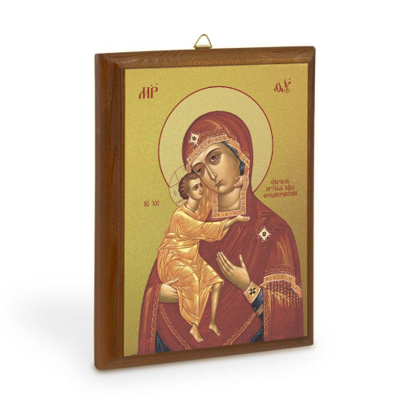
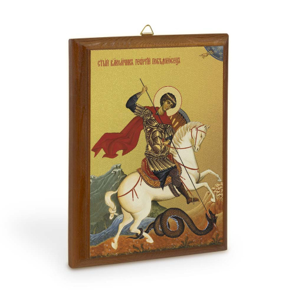
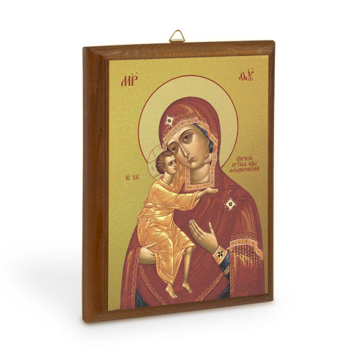
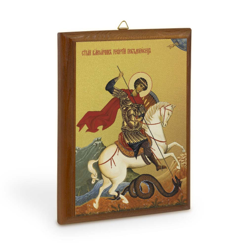
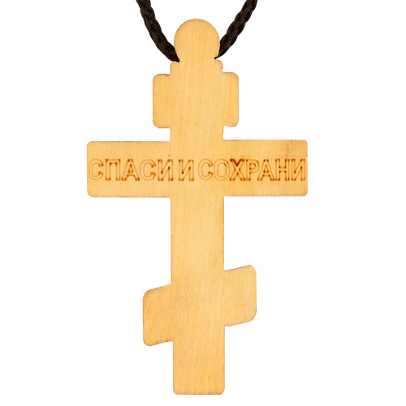
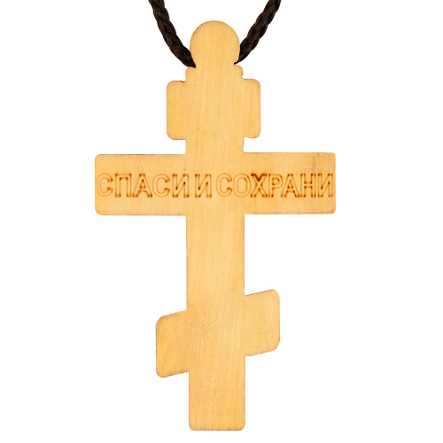
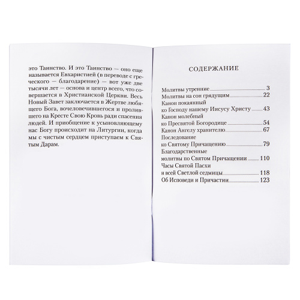
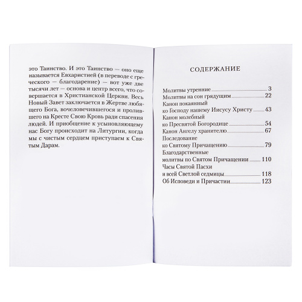

Katalog
Hier findest du eine Auswahl der derzeit verfügbaren Artikel:
Ikone
auf Holzgrundlage, bedruckt auf Leinwand mit Vergoldung.
Auf der Rückseite befindet sich ein Haken zum Aufhängen.
Grösse: 12cm x 16.5cm
Preis:
 



Gebetskerzen
70% Parafin, 30% Bienenwachs.
12 Stück à 17,6cm, Ø 0,6cm.
Preis:
bzw. 40 Stück à 21,5cm, Ø 0,61cm.Preis:
Gebetsketten
Armband comboskini (griechischer Rosenkranz) mit geflochtenem Kreuz und Perlen.
Preis:

Kreuzkette aus Leder
Abmessungen: 2,5x4 cm, Länge des Gaitans 60 cm.
Preis:
Kreuzkette aus Holz mit Vergoldung.
Grösse: 2,8x4,8 cm.
Preis:
 

Gebetsbuch (Molitvoslov) auf Russisch.
Grösse: 12,5x0,7x20 cm. | Anzahl Seiten: 128. | Jahr der Veröffentlichung: 2019. | Herausgeber: Nicea. | Einband: weich. | Gewicht: 114 g.
Preis:
 

Weihrauch (Ladan) mit Kohle
Weihrauch "Rosny" aus Naturharzen mit Räucherkohle "Patmos" | Gewicht Weihrauch - 8 g | Gewicht Räucherkohle - 29g à 6 Stück
Preis:
Ikonen Magneten
Grösse: 7cm x 10cm | Gewicht: 20g
Preis:
Miro
Athos-Myrrhe mit dem Zusatz von geweihtem Öl aus der Ikone des Heiligen Panteleimon aus dem Kloster St. Panteleimon auf dem Berg Athos.
Inhalt: 1.5ml | Gewicht: 5g
Preis:
Nach Absprache können Sonderbestellungen durchgeführt werden.